모든 화면은 같은 요양시설, 같은 입소자 네 명(박영자 78 · A-3 / 최명자 82 · B-1 / 김순자 79 · B-2 / 이정숙 85 · A-7)의 하루를 각자의 자리에서 본 것입니다. 화면 속 시설 · 인물 · 기록은 시연용 가상 자료이고, 인물 사진은 AI 생성 이미지입니다.
팀 노인과 바다 · 대표 손예찬 · 김지욱 · 고해은 · 계원예술대학교 디지털미디어디자인과
하루안부 사업계획서 부록02 / 13
00
서비스 한눈에
요양보호사가 한 번 남긴 기록이 받는 사람마다 다른 언어로 도착합니다. 입력하는 사람은 한 명, 받는 사람은 셋.
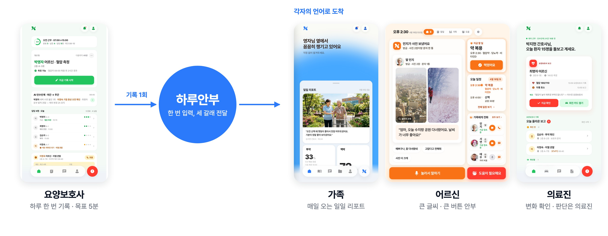
누가 무엇을 받나
요양보호사 — 하루 한 번 기록(목표 5분), 체크 항목 위주.
가족 — 매일 도착하는 일일 리포트.
의료진 — 측정값과 현장 메모를 시간순으로. 판단은 의료진이.
어르신 — 큰 글씨 · 큰 버튼 한 화면.
왜 한 번의 기록인가
가족의 같은 질문("오늘 어떠셨어요?")이 매일 전화로 요양팀에 몰립니다.
기록은 이미 남기고 있습니다. 가족에게 닿는 길이 비어 있을 뿐입니다.
새 일을 더하지 않고, 이미 하는 기록을 네 화면으로 나눠 보냅니다.
4역할요양보호사 · 가족 · 의료진 · 어르신
39화면앱 · 웹 고유 화면, 공개 배포
357디자인 토큰자동 검사로 일관성 · 접근성 점검
23 · 5영어 · 중국어 화면외국인 요양보호사 대응
흐름도는 공개 시제품의 실제 화면으로 만들었습니다. 숫자는 사업계획서 1항과 같습니다(2026.11 기준).
하루안부 사업계획서 부록03 / 13
01
요양보호사 앱 ①
모든 화면의 출발점. 근무 중 할 일 순서대로 기록하고, 그 기록이 가족 · 의료진 · 어르신 화면의 재료가 됩니다.
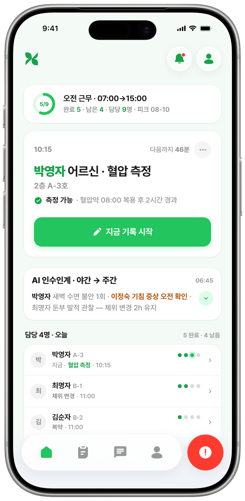
01오늘오전 근무 진행(5/9)과 다음 일(10:15 박영자 어르신 · 혈압 측정)을 크게. 「지금 기록 시작」 한 번으로 기록이 열립니다.02케어 기록담당 4명의 오늘 기록 진행(3/8 · 5/8)을 보며, 손이 바쁘면 마이크로 말해서 남깁니다.
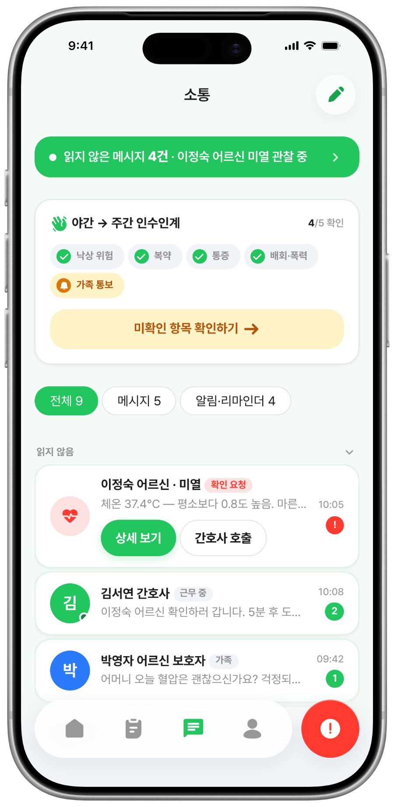
03소통 · 인수인계인수인계 항목을 확인하고, 간호사 · 보호자 메시지를 한 목록에서 답합니다.
자세히이유가 붙은 할 일
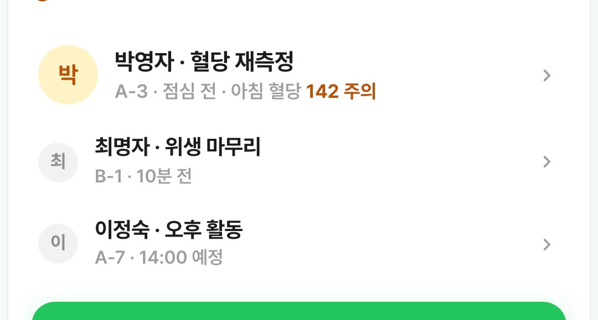
할 일마다 왜 지금인지가 함께 뜹니다 — 박영자 · 혈당 재측정, 아침 혈당 142 주의.
자세히인수인계 체크
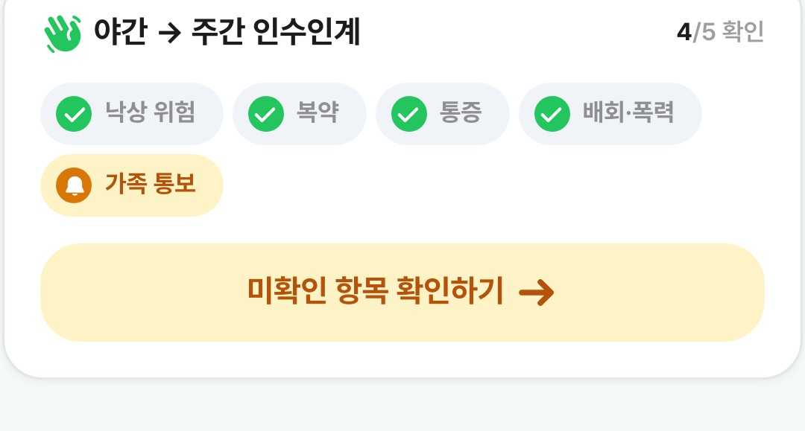
낙상 위험 · 복약 · 통증 · 배회 · 폭력 · 가족 통보를 하나씩 확인합니다(4/5). 남은 항목은 노랗게.
요양보호사 앱 웹 시제품(v11) 화면을 iPhone 17 Pro 틀에 넣었습니다. 390 × 844 기준, 2026.11.26 캡처. 인수인계 요약 칸은 설계만 했고 파일럿에서는 AI 없이 돌립니다(계획서 3항).
하루안부 사업계획서 부록04 / 13
01
요양보호사 앱 ②
기록만이 아니라 근무 자체를 앱 안에서 — 일정 · 출퇴근 · 알림을 한곳에 둡니다.
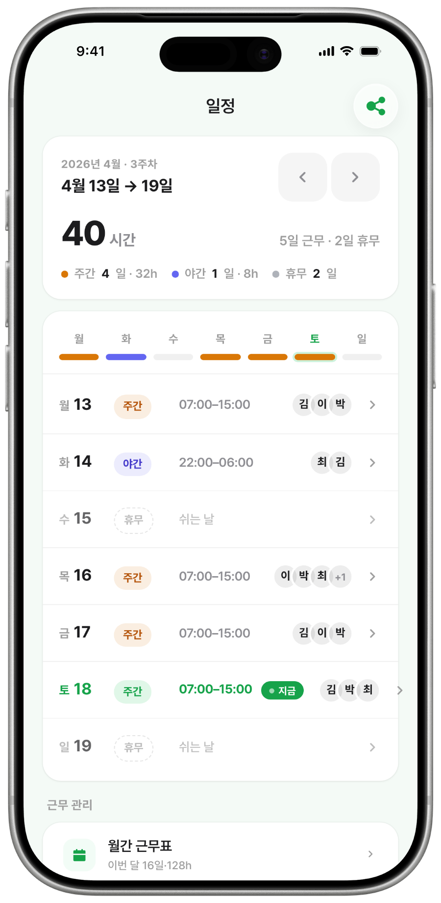
01근무 일정이번 주 주간 · 야간 · 휴무와 함께 근무하는 동료, 월간 근무표와 근무 교환 요청까지.
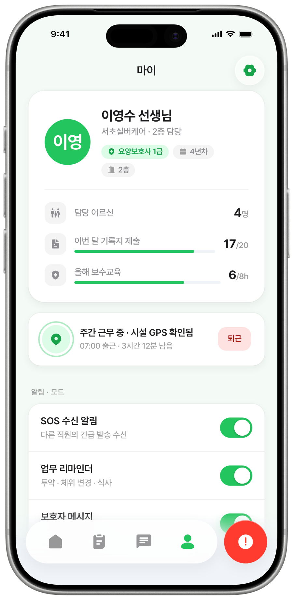
02내 정보 · 출퇴근자격 · 담당 어르신 · 이번 달 기록지 제출(17/20) · 보수교육, 그리고 알림 설정.
자세히주 근무 시간
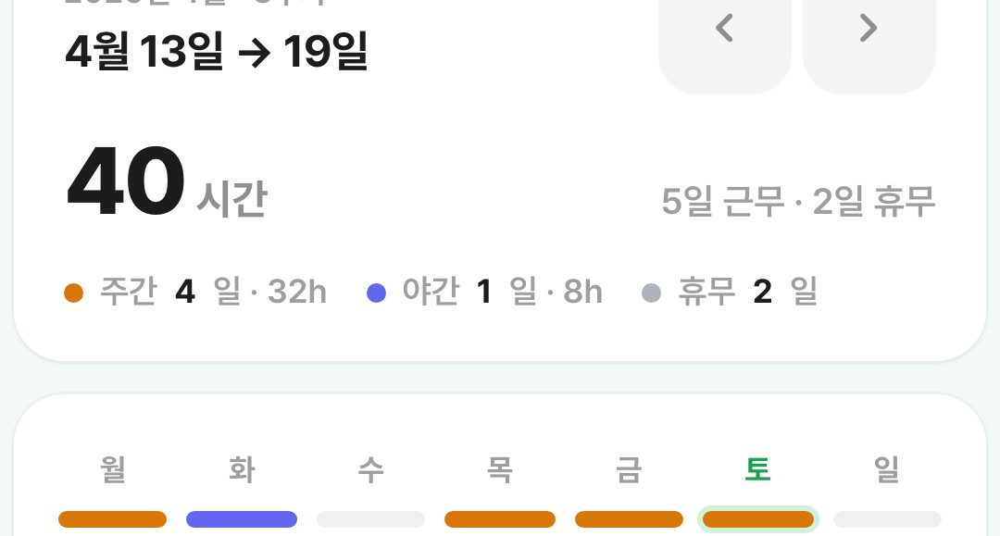
이번 주 40시간 · 5일 근무 · 2일 휴무. 주간 · 야간을 색으로 구분합니다.
자세히출퇴근 · 긴급 알림
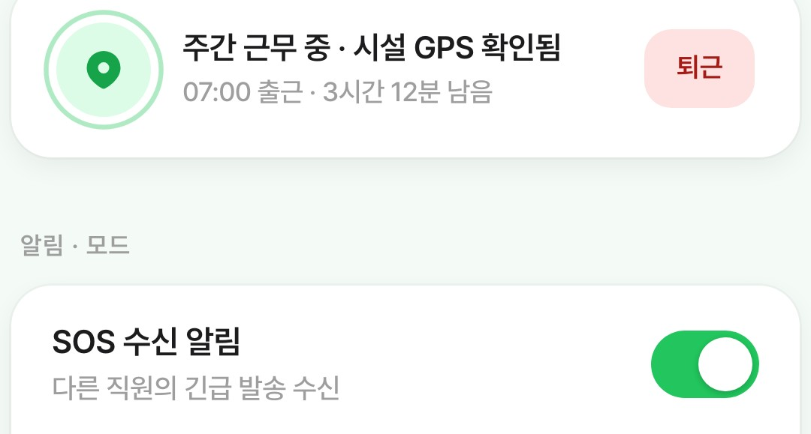
시설 위치 확인으로 출퇴근을 남기고, 동료의 SOS를 받는 알림을 켭니다.
요양보호사 앱 웹 시제품(v11). 390 × 844 기준, 2026.11.26 캡처.
하루안부 사업계획서 부록05 / 13
02
외국인 요양보호사
현장의 요양보호사 중에는 한국어가 모국어가 아닌 분도 있습니다. 같은 기록 화면을 영어 · 중국어로 씁니다.
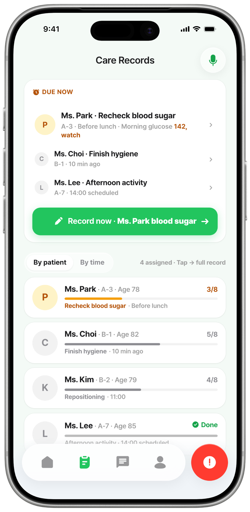
01Care Records케어 기록 화면의 영어판. 할 일 · 이유 · 진행이 같은 자리에 있어 일하는 순서가 같습니다.
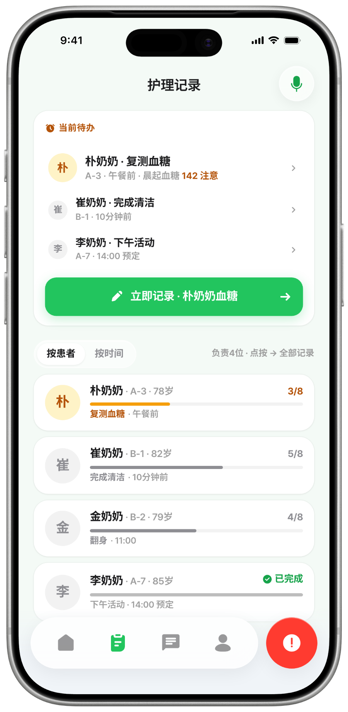
02护理记录같은 화면의 중국어판. 이름 · 호실 · 수치는 그대로 두고 안내 문장만 바꿉니다.
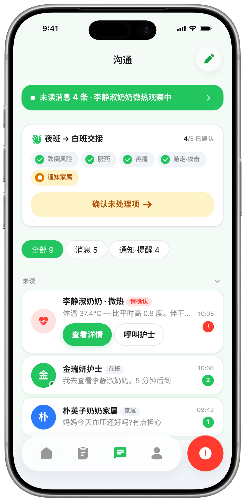
03沟通소통 · 인수인계의 중국어판. 가족에게 가는 리포트는 한국어로 나갑니다.
자세히English
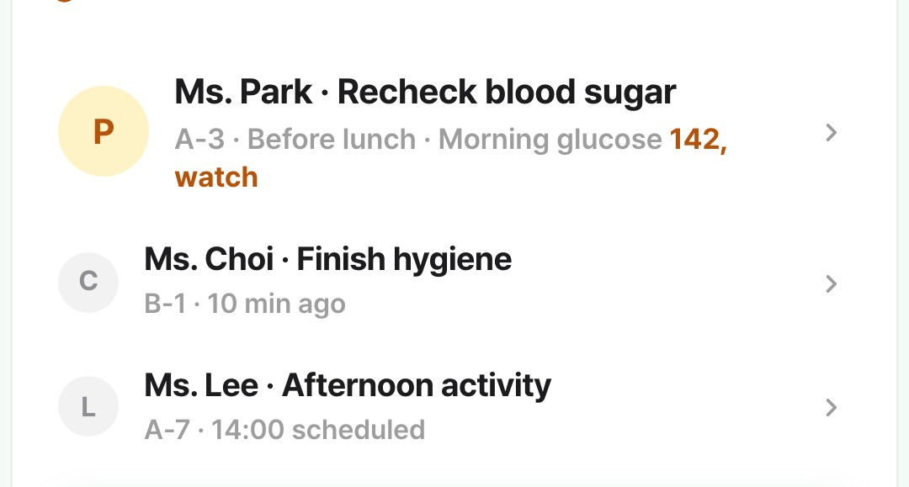
Due now · Ms. Park · Recheck blood sugar — 이유(morning glucose 142, watch)도 그대로 옮깁니다.
자세히中文
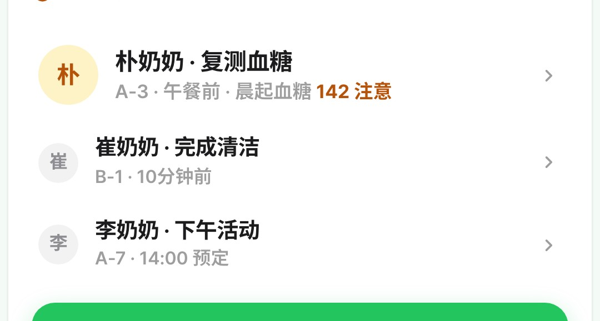
当前待办 · 朴奶奶 · 复测血糖 — 같은 카드, 같은 순서, 같은 버튼.
영어 23개 · 중국어 5개 화면을 만들었습니다(계획서 1항). 이 쪽은 그중 요양보호사 앱 세 화면입니다. 2026.11.26 캡처.
하루안부 사업계획서 부록06 / 13
03
가족(보호자) 앱 ①
전화로 묻지 않아도 매일 오늘의 부모님을 압니다. 놀라게 하는 경고 대신, 있었던 일을 있는 그대로 전합니다.
01일일 리포트가장 먼저 안심할 한 줄, 그 아래 오늘의 사진과 한마디, 투약 · 맥박 요약. 첫 개발 범위의 도착점입니다(12쪽).
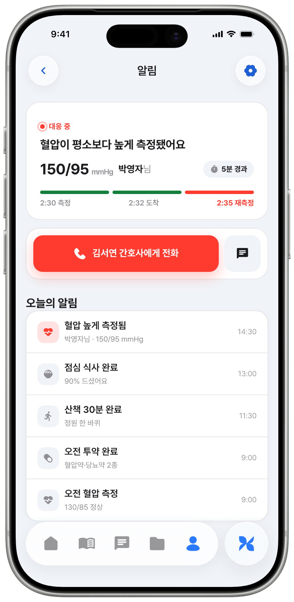
02알림측정 → 도착 → 재측정 시간을 보여 주고, 담당 간호사에게 바로 전화합니다.
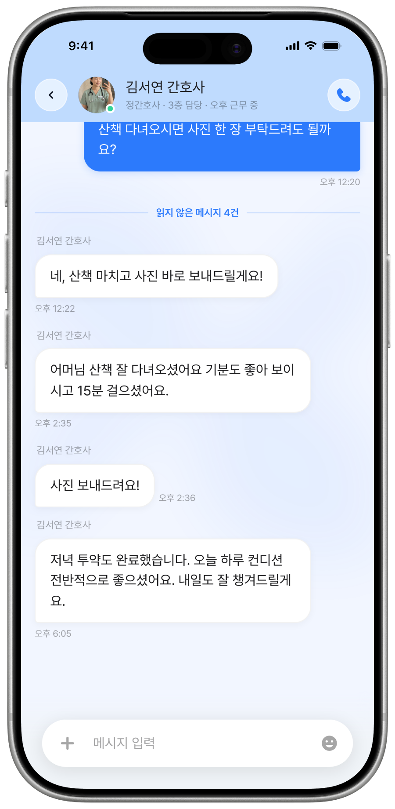
03간호사와 대화궁금한 것을 담당 간호사에게 직접 묻고, 답과 사진을 받습니다.
자세히판단 대신 사실
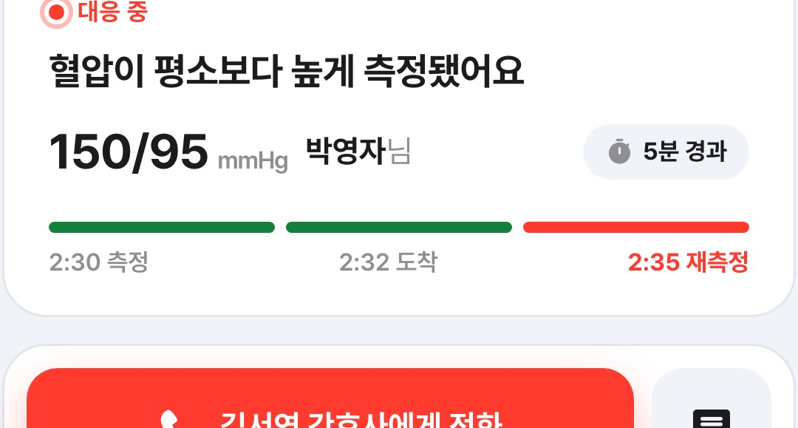
「혈압 이상 감지」가 아니라 「혈압이 평소보다 높게 측정됐어요」. 150/95 · 5분 경과 · 2:35 재측정.
자세히돌본 사람의 한마디
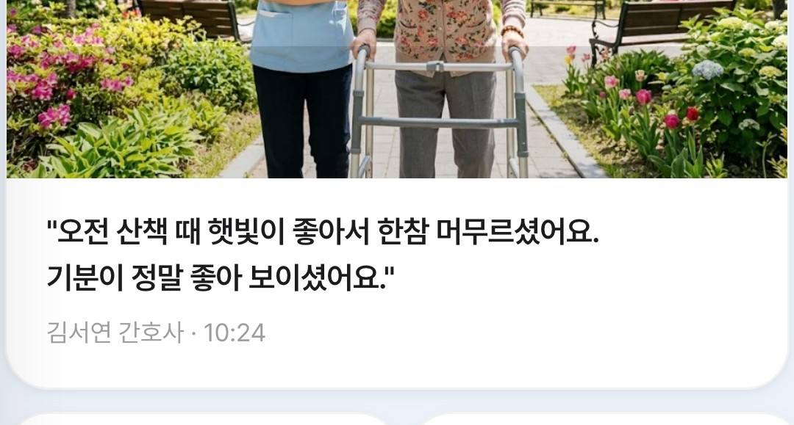
"오전 산책 때 햇빛이 좋아서 한참 머무르셨어요." — 누가 몇 시에 남겼는지까지(김서연 간호사 · 10:24).
보호자 앱 웹 시제품(v11). 390 × 844 기준, 2026.11.26 캡처.
하루안부 사업계획서 부록07 / 13
03
가족(보호자) 앱 ②
매일의 안부 너머 — 의료 기록 · 가족의 확인이 필요한 일 · 가족끼리의 대화까지.
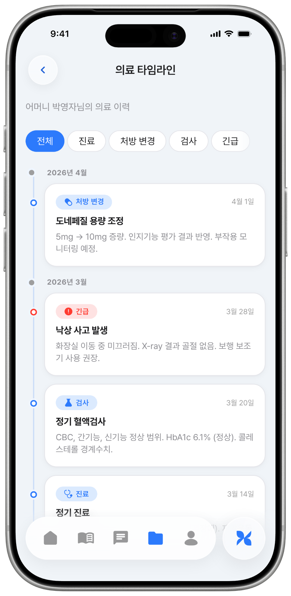
01의료 타임라인처방 변경 · 검사 · 진료 · 긴급을 시간순으로. 의료진의 기록을 가족이 같은 순서로 봅니다.
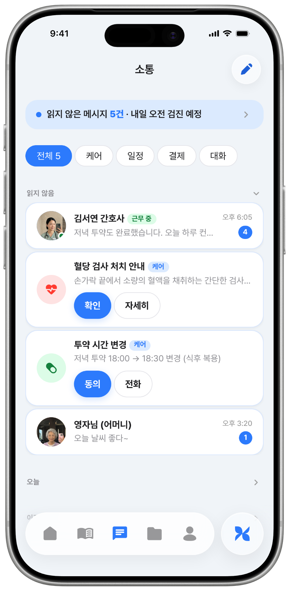
02소통 · 확인 요청처치 안내 · 투약 시간 변경처럼 가족의 확인이 필요한 일을 버튼 하나로 답합니다.
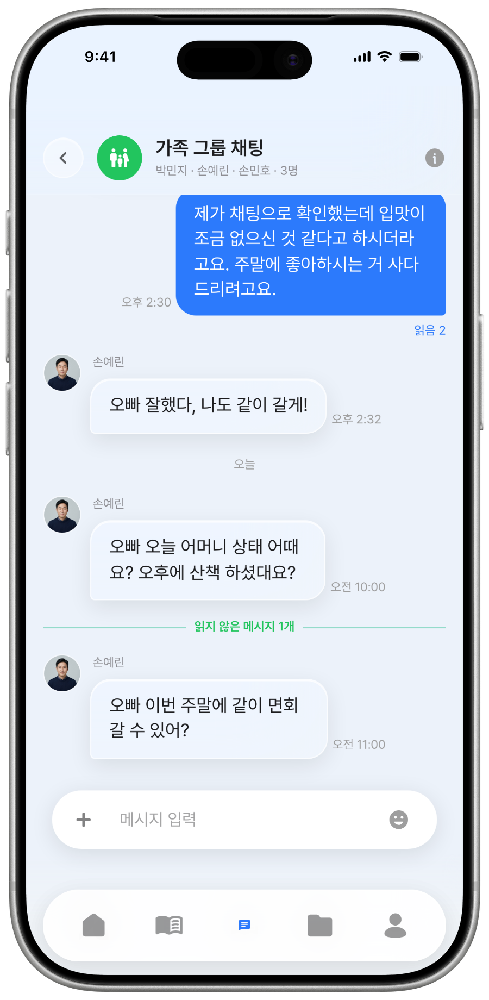
03가족 그룹 채팅형제자매가 한 방에서 부모님 소식을 나눕니다. 각자 전화로 되묻지 않아도 됩니다.
자세히처방 변경도 가족에게
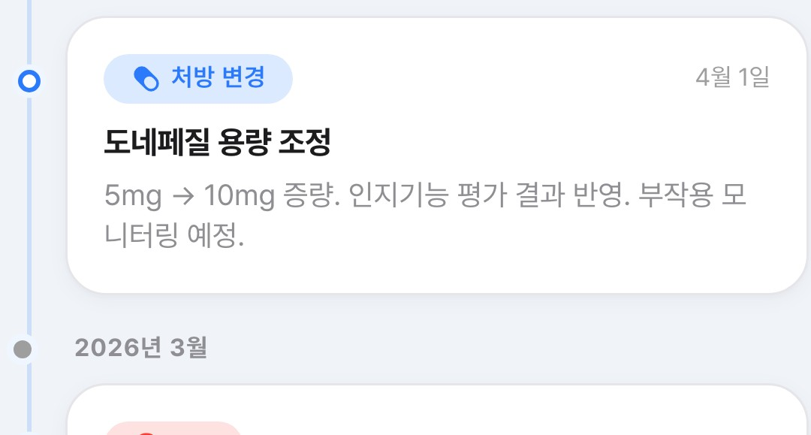
도네페질 5mg → 10mg 증량(4월 1일). 인지기능 평가 결과와 다음 모니터링 계획까지.
자세히확인 · 동의 버튼
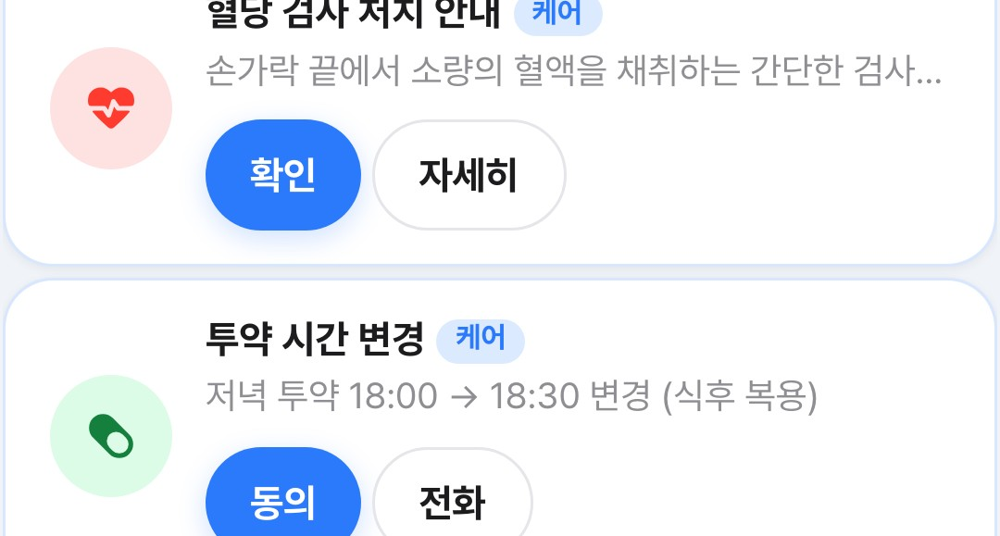
혈당 검사 처치 안내는 「확인」, 저녁 투약 18:00 → 18:30 변경은 「동의」로 답합니다.
보호자 앱 웹 시제품(v11). 390 × 844 기준, 2026.11.26 캡처.
하루안부 사업계획서 부록08 / 13
04
의료진 앱
앱은 판단하지 않습니다. 현장 기록을 시간순으로 모아 보여 주고, 확인과 판단은 의료진이 직접 합니다.
01요양보호사 보고 확인오늘 올라온 보고를 확인 전 · 확인함으로 나눠, 놓친 보고가 없게 합니다.
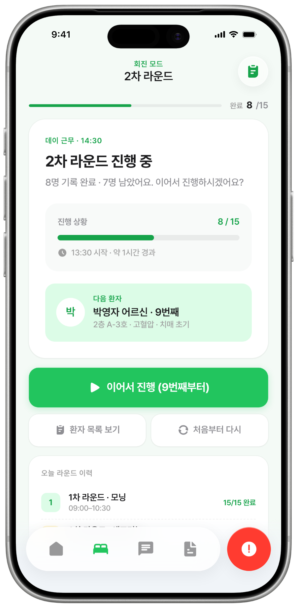
02회진 모드2차 라운드 8/15 진행 중. 다음 환자와 지난 라운드 이력을 보며 이어서 기록합니다.
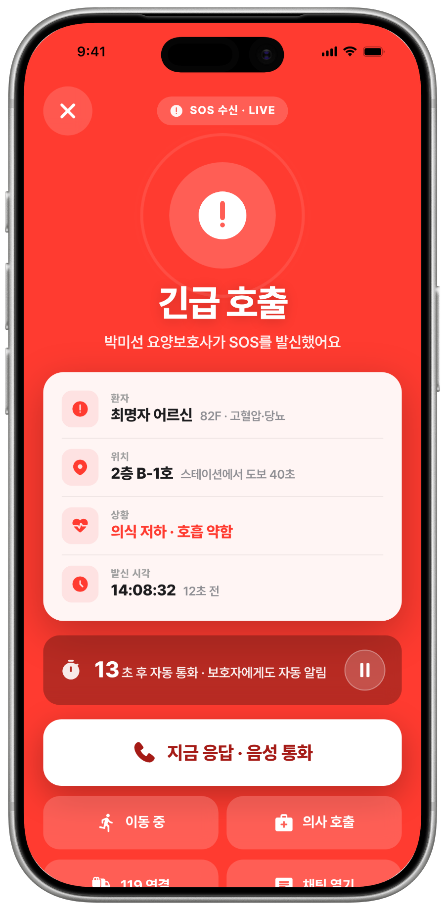
03긴급 호출요양보호사의 SOS를 한 화면에. 13초 안에 응답이 없으면 자동 통화, 보호자에게도 알립니다.
자세히사람이 남긴 보고
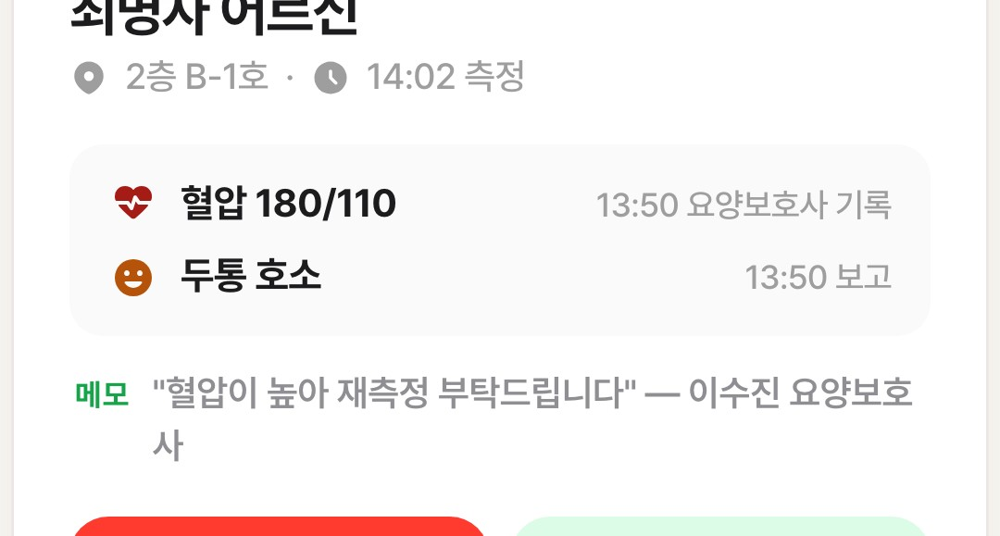
최명자 어르신 · 혈압 180/110 · 13:50 요양보호사 기록, 메모 "혈압이 높아 재측정 부탁드립니다". 확인은 의료진이 누릅니다.
자세히누가 · 어디서 · 언제
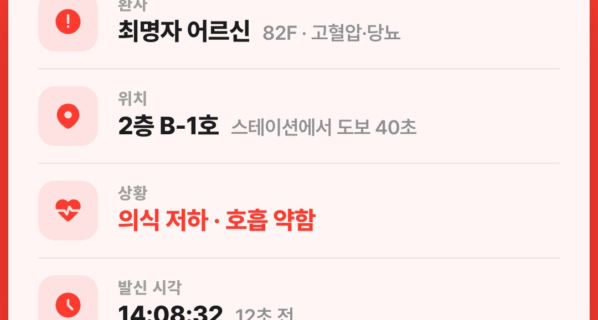
최명자 어르신 · 2층 B-1호(스테이션에서 도보 40초) · 의식 저하 · 14:08:32 발생.
의료진 앱 웹 시제품(v15). 첫 화면은 판단 표현을 걷어 낸 문구 수정안을 적용해 찍었습니다(11쪽). 390 × 844 기준, 2026.11.26 캡처.
하루안부 사업계획서 부록09 / 13
05
어르신 태블릿 ①
큰 글씨, 큰 버튼, 메뉴는 넷(홈 · 할 일 · 가족 · 도움). 읽지 않아도 누를 수 있게 만들었습니다.
01오늘가족 소식(딸이 보낸 사진 · 문자)과 고르기만 하면 되는 답장, 약 먹을 시간의 「먹었어요」, 가족에게 전화가 한 화면에. 맨 아래 가장 큰 두 버튼은 말로 하기와 도움 요청.
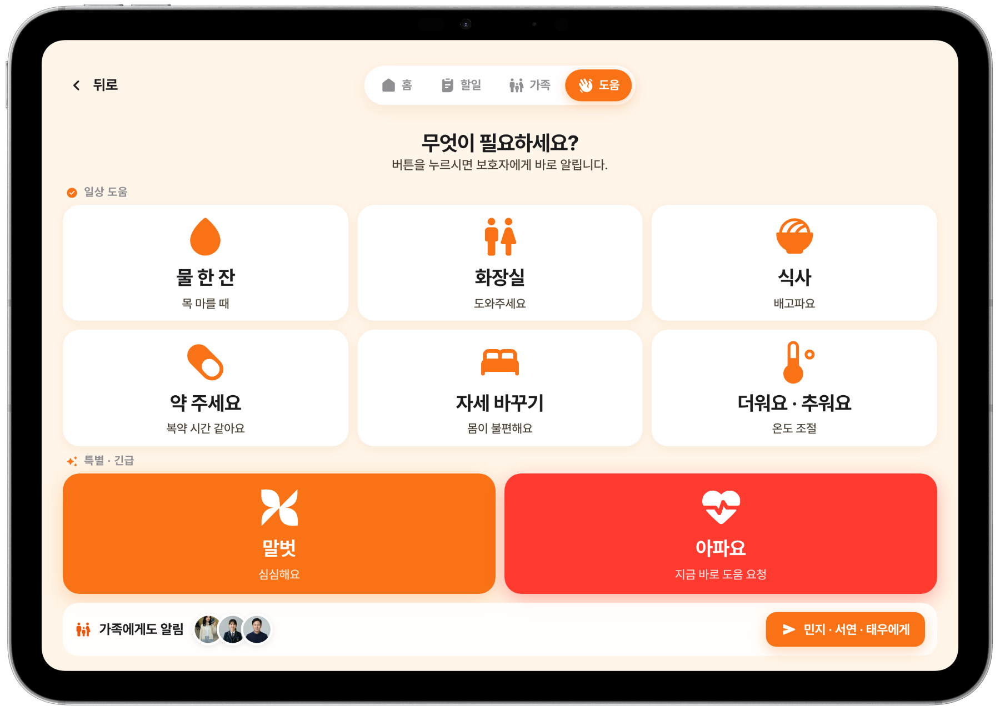
02도움 요청물 한 잔 · 화장실 · 식사 · 약 · 자세 · 온도, 그리고 아파요. 누르면 보호자에게 바로 알립니다.
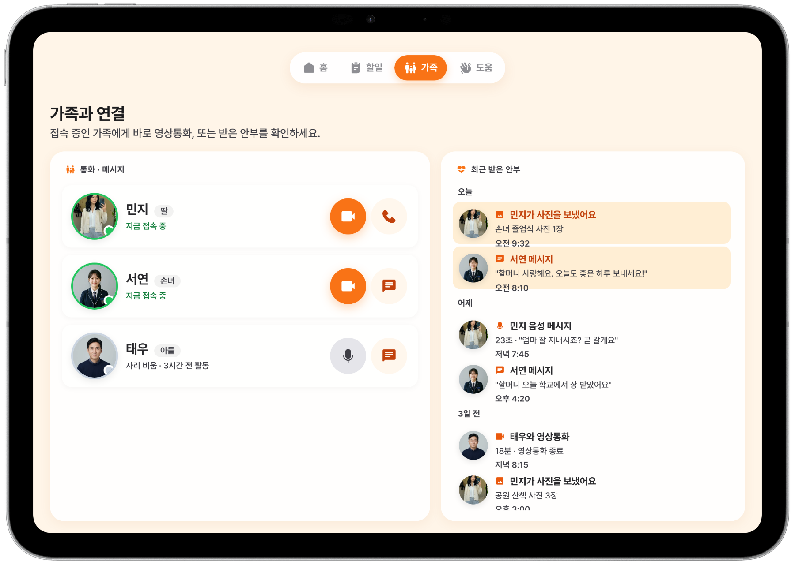
03가족과 연결접속 중인 가족에게 바로 영상통화, 받은 사진 · 음성 메시지를 다시 봅니다.
어르신 앱 웹 시제품(v12) 화면을 iPad Pro 11" 틀에 넣었습니다. 1210 × 834 기준, 2026.11.26 캡처.
하루안부 사업계획서 부록10 / 13
05
어르신 태블릿 ②
하루의 할 일과 가족의 소식이, 누르는 한 번으로 끝나도록.
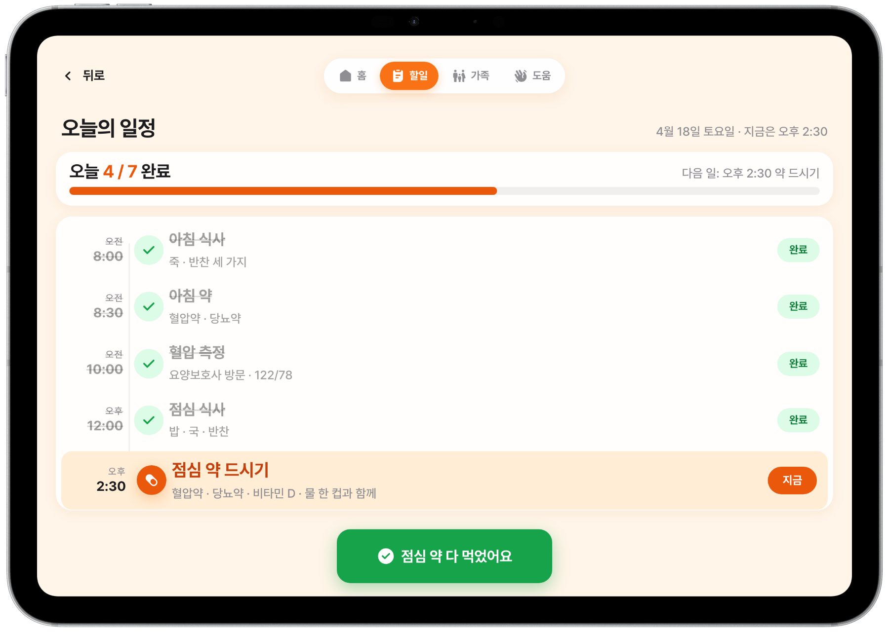
01오늘의 일정식사 · 약 · 측정 진행(4/7). 지금 할 일(점심 약)은 크게, 「다 먹었어요」 한 번이면 끝.
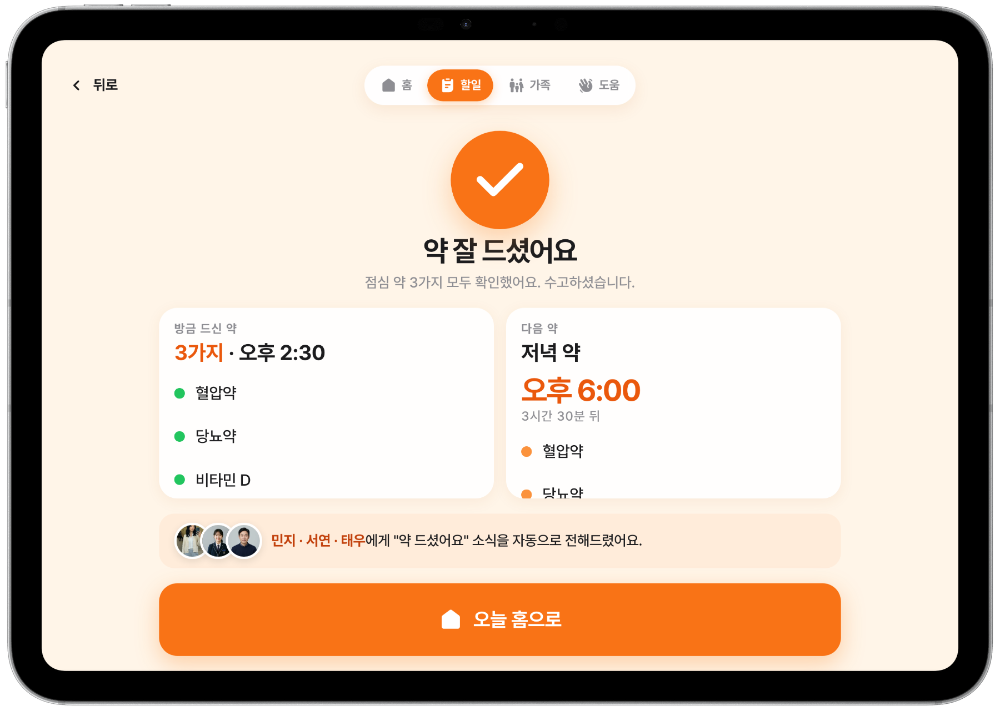
02약 잘 드셨어요먹은 약 세 가지와 다음 약 시간. 가족에게 「약 드셨어요」 소식이 자동으로 갑니다.